II. Die Geschichte von Friedrich Böhm · Kapitel 10
Rückblick von Herbert Caboga
Dieses Kapitel liegt in der Chronik als Abbildung der Originalseiten vor. Klicken Sie auf eine Seite, um sie zu vergrößern.
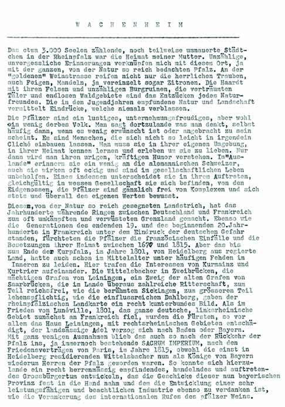
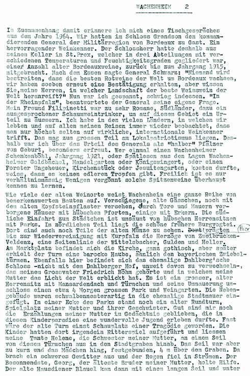
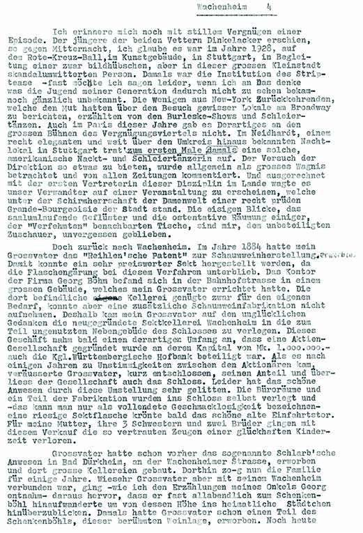
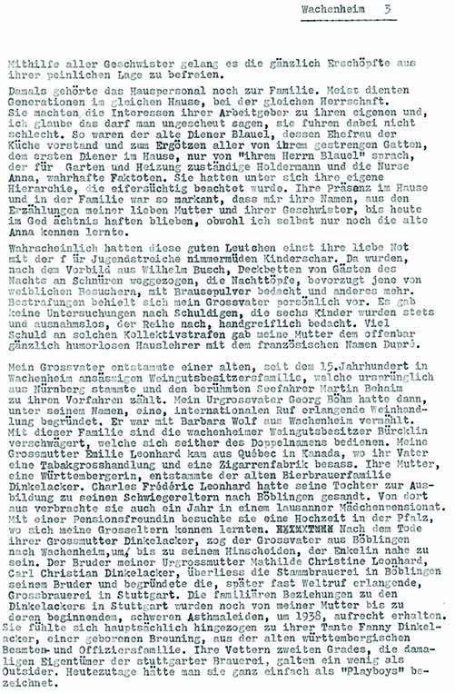
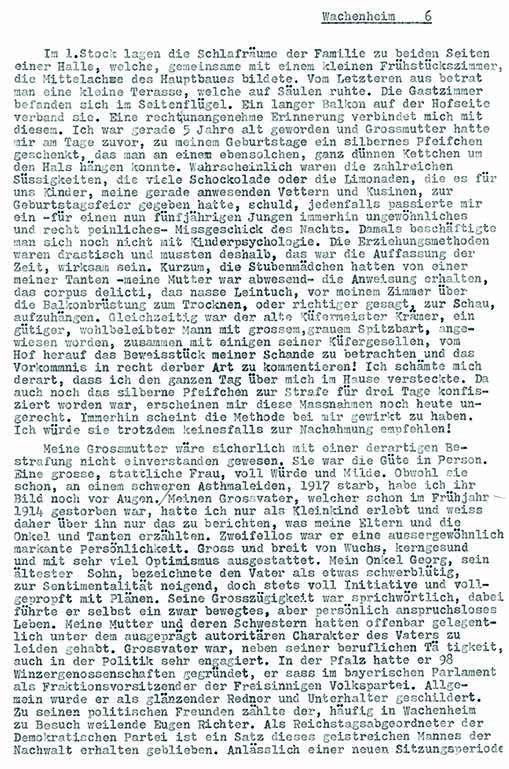
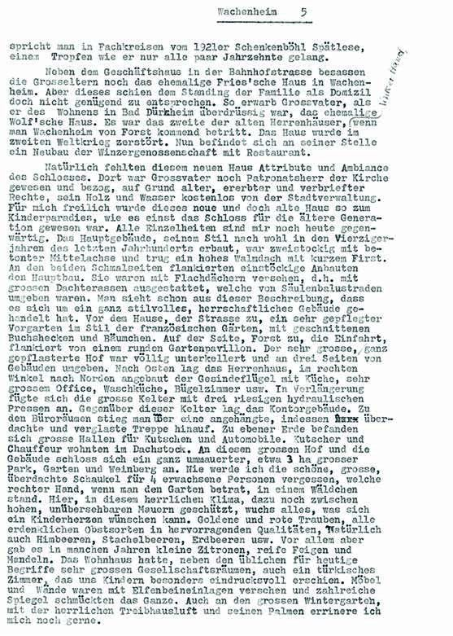
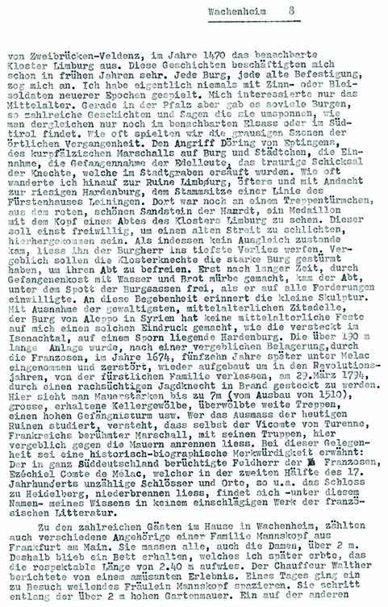
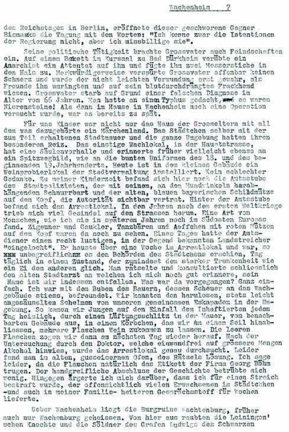
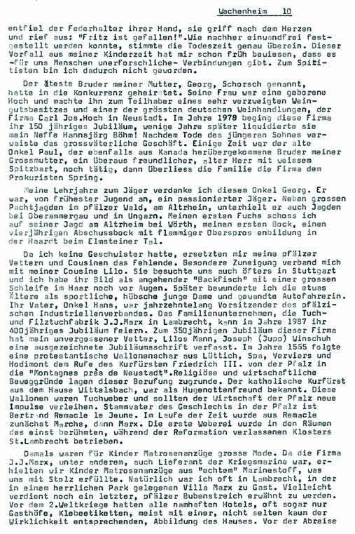
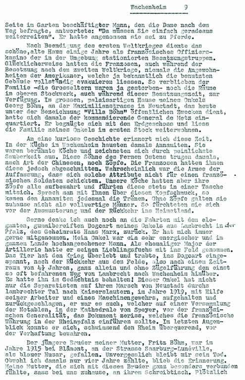
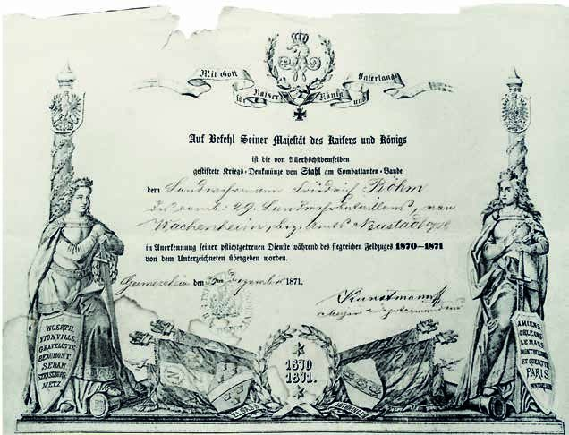
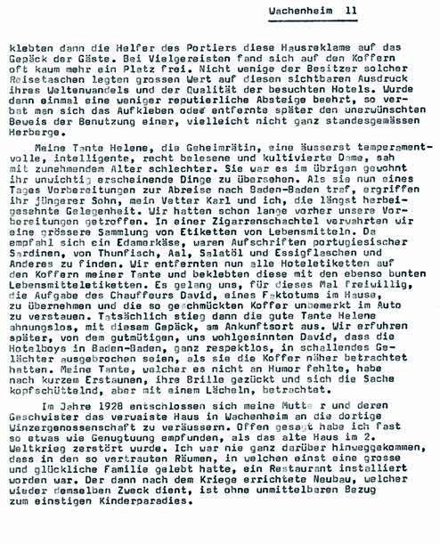